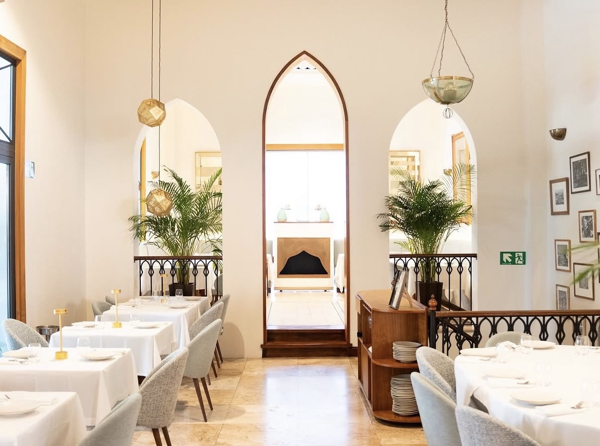
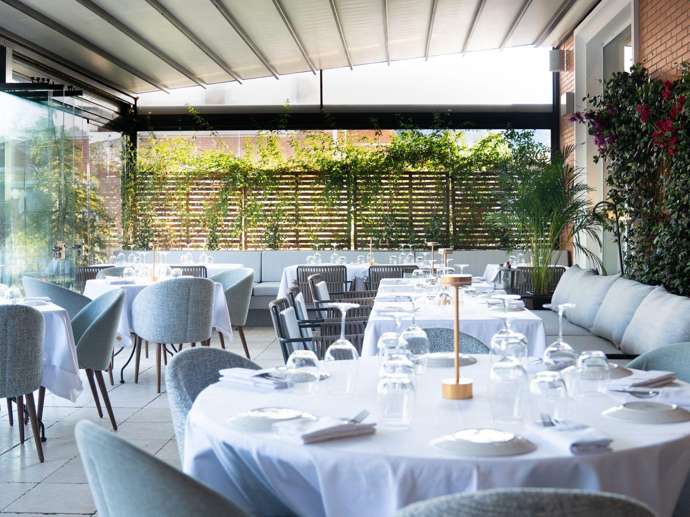
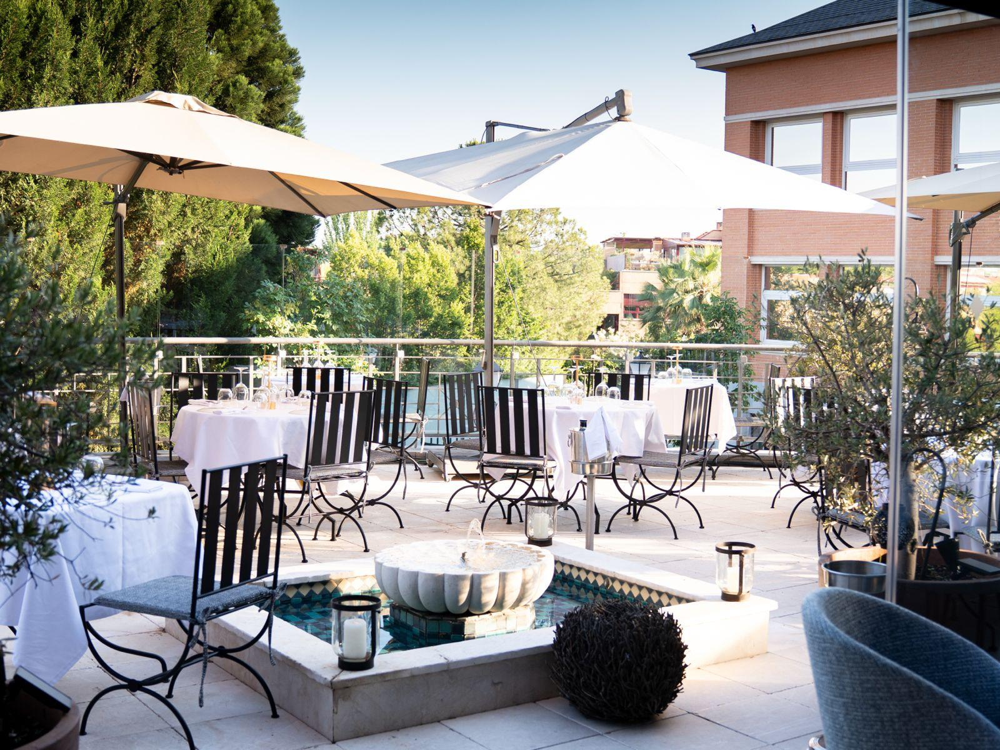

Salón interior
Un espacio acogedor para comer y cenar.
Un lugar para encontrarnos. Reserva tu mesa.
Disfruta de la cocina libanesa en el salón interior o en nuestras terrazas. Podrás elegir la zona disponible al completar tu reserva.

Un espacio acogedor para comer y cenar.

Al aire libre, con cubierta.

Al aire libre y sin cubierta fija.
Abrimos de martes a domingo. La reserva online se completa en nuestro sistema de reservas, donde verás los horarios y zonas disponibles en tiempo real. Comida de 13:00 a 15:15; shisha y cócteles en las terrazas de 15:30 a 19:45; cena de 20:00 a 22:15.
Ver disponibilidad y reservarSelecciona de nuevo la fecha y el número de personas en el sistema de reservas para confirmar. Para grupos de más de 12 personas o solicitudes de VIP, llama al 917 544 838.